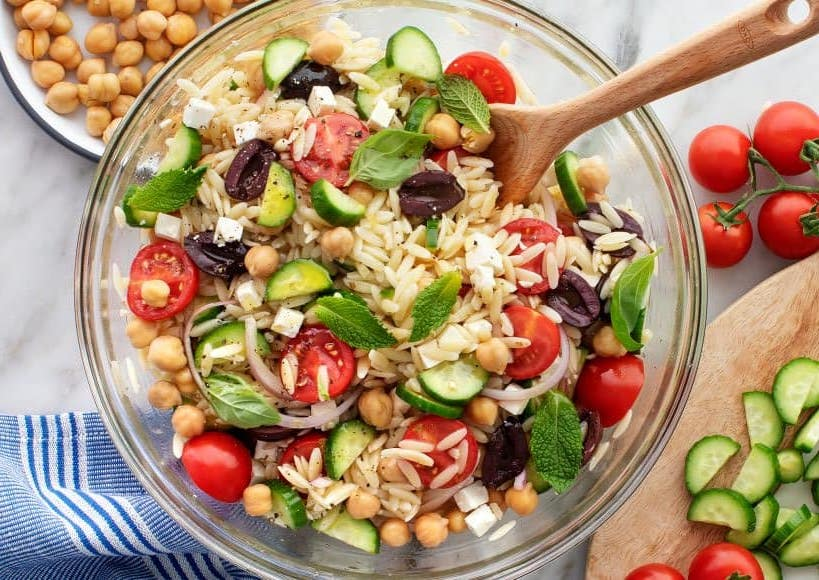

Orzo Salad

Description
This orzo salad recipe is a fresh, delicious side dish or vegetarian lunch! If you make it ahead of time, save the herbs to add at the last minute. I also recommend tossing the salad with a drizzle of olive oil before serving.
Ingredients
- 1½ cups dry orzo pasta
- 1 recipe Greek Salad Dressing
- 1 tablespoon red wine vinegar
- 1 tablespoon fresh lemon juice
- ½ teaspoon oregano
- ¼ teaspoon sea salt
- 2 Persian cucumbers, halved vertically, and sliced ¼-inch thick
- 2 cups halved cherry tomatoes
- 1 cup cooked chickpeas, drained, and rinsed
- 4 ounces feta cheese, cut into ¼-inch cubes
- ⅓ cup thinly sliced red onion
- ½ cup pitted Kalamata olives
- 1 cup fresh basil and/or mint leaves
- Freshly ground black pepper
Steps
- Bring a large pot of salted water to a boil. Prepare the pasta according to the package directions, or until slightly past al dente. Drain the orzo and toss it with a little olive oil, so that it doesn’t stick together. Spread onto a baking sheet to cool.
- Prepare the Greek Salad Dressing and add in the red wine vinegar, lemon juice, oregano, and sea salt.
- In a large bowl, toss together the cooked orzo, cucumbers, tomatoes, chickpeas, feta, red onion, and olives. Drizzle the dressing over the salad, add half the herbs, season with freshly ground black pepper, and toss to coat. Garnish with the remaining herbs and serve.